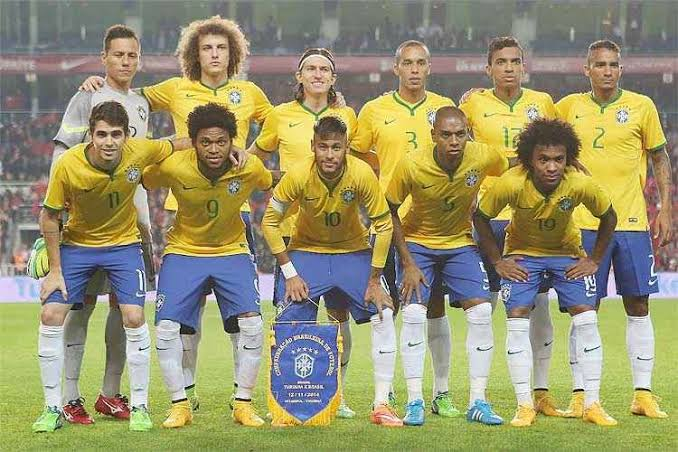
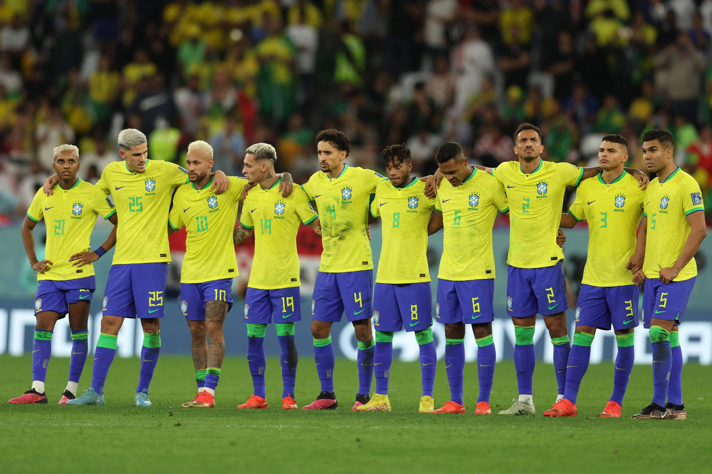

A História da Seleção Brasileira (nossa primeira reportagem)

A história da Seleção Brasileira de Futebol é marcada por conquistas, talento e paixão pelo esporte. Desde sua primeira partida oficial, em 1914, a equipe tornou-se um dos maiores símbolos do futebol mundial. Conhecida por seu estilo de jogo criativo e pela revelação de grandes craques, a Seleção conquistou cinco títulos da Copa do Mundo, consolidando-se como a maior vencedora da competição. Ao longo das décadas, enfrentou desafios, viveu momentos inesquecíveis e inspirou milhões de torcedores. Sua trajetória representa não apenas o sucesso esportivo, mas também um importante elemento da identidade e da cultura brasileira.

A Seleção Brasileira de Futebol é uma das equipes mais importantes e vitoriosas da história do esporte. Sua trajetória começou em 1914, e, desde então, o Brasil se tornou conhecido mundialmente pelo seu futebol habilidoso e ofensivo. A primeira grande conquista aconteceu na Copa do Mundo de 1958, na Suécia, quando a equipe, liderada pelo jovem Pelé, conquistou seu primeiro título mundial. Em 1962, o Brasil foi campeão novamente e, em 1970, conquistou o tricampeonato com uma equipe considerada uma das melhores de todos os tempos. Depois de alguns anos sem vencer a Copa, a Seleção voltou a ser campeã em 1994 e conquistou o pentacampeonato em 2002. Durante sua história, grandes jogadores como Garrincha, Zico, Romário, Ronaldo, Ronaldinho e Neymar também marcaram época. Atualmente, o Brasil continua sendo uma das principais forças do futebol mundial. A Seleção busca conquistar novos títulos e manter a tradição de revelar grandes talentos, representando milhões de brasileiros apaixonados pelo futebol e pela camisa verde e amarela em todas as competições internacionais.